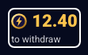
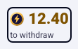

Figure
A value with its unit and its caption: a price, a balance, a stake, a gain, a counter. Money is gold at 900 and never moves. Everything on this page is drawn by design/system/components/figure.css through index.css, the same file a screen will load.
Anatomy
74.20Balance
140.95Value of items held
12.40 coinsPrice, one open
367 013 504Total users
| Part | Class or element | What to change there |
|---|---|---|
| The figure | .fig | the column of a value and its caption; its ink is the quiet grey the caption wears |
| Value | .fig__v | the number: weight 900, tabular figures, one line; its tone and its size |
| Unit | .icon--coin inside the value | the coin before the number, at the number's size; a figure that is not money carries no coin |
| Caption | .fig__c | what the number is, 11px; optional, and a figure in a row of figures leaves it out |
| Tone | .fig--money, --soft, --up, --down, --missing | the colour of the value: gold, quiet, green, red, grey |
| Size | .fig--xs, --m, --title, --l, --head, --win | the value's size, seven steps with the plain 14 (D-262) |
| Counter | .fig--stat | pink with its light, the caption in small spaced capitals; its size is the container's |
| Link | a.fig | the whole figure is the target |
Variants and sizes
Three axes, and a counter form beside them. Each carries its rule, so the next screen picks by the rule. Sizes below are read from the rendered figures, not from the stylesheet.
- Tone = what the number is. Money is gold at 900 and never moves (the Money Is Calm Rule). A gain is green, a fall is red, and the second figure of a pair is the soft one. A value nobody has is the missing form, never a zero (D-124).
- Size = the density of the container, never the importance of the number. Seven steps, each named by the type step it reads (D-262, Q4). 22 is the Figure's own value, the one step off the scale: it is the price beside an act, and moving it to 20 or 24 moves the price beside every act (D-262, Q5).
- Spacing and alignment = the layout. The gap between a coin and its number, and whether a figure sits at the start or the end of its cell, are the container's.
.fig--endis not carried: the commit block's act aligns its own figure (rename map row 14).
Tone
1 250Tickets
1 250Price
140.95Value of items held
+4.85Out to Steam
-4.85Against the price
NoneOn sale
Size
| Variant | Type step it reads | Sample, read from the render | Where it stands |
|---|---|---|---|
.fig--xs | --size-xs 13 | 1 250 | a batch of rounds on a narrow outcome card |
.fig | --size-label 14 | 1 250 | the header money plate, any figure in a row |
.fig--m | --size-m 18 | 1 250 | a drop price on a phone, on a row |
.fig--title | --size-title 20 | 1 250 | a drop card, a recent drop, an item, the selection's sum, the account head |
.fig--l | its own, 22 (--fig-l) | 1 250 | the price beside an act, the net of an open |
.fig--head | --size-head-l 26 | 1 250 | the deposit dock's sum |
.fig--win | --size-stat 30 | 1 250 | the worth of the skin won, on the outcome card |
Where a container steps a figure down on a phone (a recent drop's 20 to 18, an outcome batch's 22 to 13), the step is the container's own rule reading these same sizes; the Figure has no responsive variant.
Content
2 481 902Total users
367 013 504Rounds opened
NoneMarket
.fig--stat: a counter in the footer, pink with a light under it. The footer sets its sizes through--fig-stat-v,--fig-stat-cand--fig-stat-gap; without them the number is 40 and the caption 12.- The missing form is a word in place of the number, "None" here, "Copies on sale cannot be read right now" in a row of a drop table. It says the value is not known; it never draws a zero.
When to use
A figure is a number the player reads to decide: a price, a balance, a stake, a gain. Every number about money carries its unit, the coin, and the peg is printed wherever money is spent (D-28). It is read, never summed into a score: the header's two figures, balance and the value of items held, stay two (CLAUDE.md, "Information architecture"). A figure that cannot be known is drawn as the missing form, so an unknown never looks like a zero (D-124).
Rule and anti-rule
Use it
The header's Balance beside Value of items held. The price beside the commit's act: .fig--money.fig--l, with its caption "Price, one open". A drop's price on its card at 20. A counter in the footer as .fig--stat.
Take another component
A key with its value in a list (Chance, Tickets, Total charged) is a Key-value line. A number riding inside an act is the Button's price chip. A count pinned to a mark is a Badge. A sentence that holds a number is Prose or a Note line, with the number in the sentence.
States
No states: it is not interactive. The figure is read, never pressed. Only its link form has one: kit.css draws a focus ring on a.fig and nothing on hover or press, so the pointer shows the link cursor and the figure keeps its look. The Text link's hover is not borrowed here: the whole figure is the target and it has no underline to change.
One snapshot of that instance, dark on the left and light on the right, taken with reduced motion.


--line-focus, 2px, offset 2px, a 4px cornernode design/kit/tools/shoot-states.js http://localhost:8765/ figure # re-shoot after a change to figure.css or its tokens node design/kit/tools/shoot-states.js http://localhost:8765/ figure --check # step 9: fails if a snapshot drifted
In the code
| Token | Kind | Dark | Light |
|---|
Read live from tokens.css. Geometry, type and tracking come straight from the primitives. Two colours are read directly and wait for step 9: --shadow-fig-stat (the counter's pink light, read in this block only) and --color-down (the fall: no --text-down role yet, though its ink now has two readers, this block and Published against observed).
File: design/system/components/figure.css, loaded by design/system/index.css in the atoms' group.
<span class="fig fig--money"><span class="fig__v"><i class="icon icon--coin" aria-hidden="true"></i>74.20</span><span class="fig__c">Balance</span></span> <span class="fig fig--money fig--l"><span class="fig__v">12.40 coins</span><span class="fig__c">Price, one open</span></span> <a class="fig fig--money" href="..."><span class="fig__v">12.40</span></a>
Stands on: Home, the case screen, the catalogue, Deposit, My items, Provably fair, Responsible play, Sign in. Until step 8 those screens still read kit.css; step 6 moves their markup onto this file's forms by the rename map.